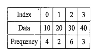

Previous year dsa questions
4.Search Trees
1. Explain the Symbol Table in details.
2. Explain AVL tree in details.
3. Explain the following :
(i) Static and dynamic tree tables with suitable example.
(ii) Dynamic programming with principle of optimality.
4. Explain the following trees using suitable example :
(i) Red-black tree
(ii) Splay tree
(iii) K-dimensional tree
5. Construct the AVL tree for the following data by inserting each of the following data item one at a time :
Example-1 : 10, 20, 15, 12, 25, 30, 14, 22, 35, 40
Example-2 : 30, 50, 110, 80, 40, 10, 120, 60, 20, 70, 100, 90
6. Write a pseudo C/C++ code for LR and RL rotation in AVL Tree.
7. Write function for LL and LR rotation with respect to AVL Tree.
8. Difference between AVL Vs RBT tree.
9.Construct AVL tree for following sequence of key:
MAR,MAY,NOV,AUG,APR,JAN,DEC,JULY
10.Find optimal binary search tree for given data using dyanamic programming approach.Explain the solution stepwise.

11. Find the Optimal Binary Search Tree for the : Identifier set {a1, a2, a3} = {do, if, while}
Where n = 3 and Probabilities of successful search as {p1, p2, p3} = {0.5, 0.1,0.05} and Probability of unsuccessful search as {q0, q1, q2,q3} = {0.15, 0.1, 0.05, 0.05}